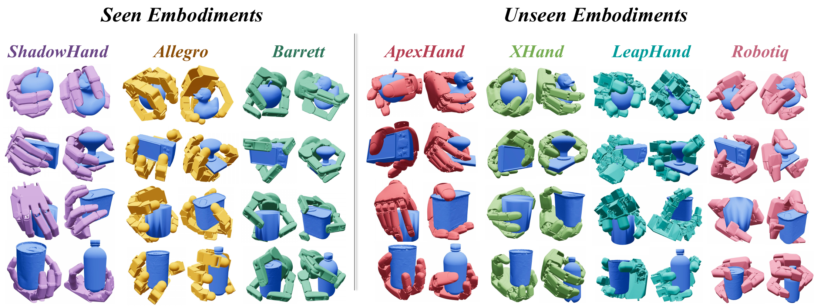
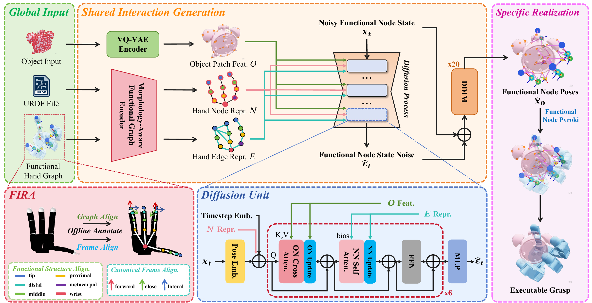
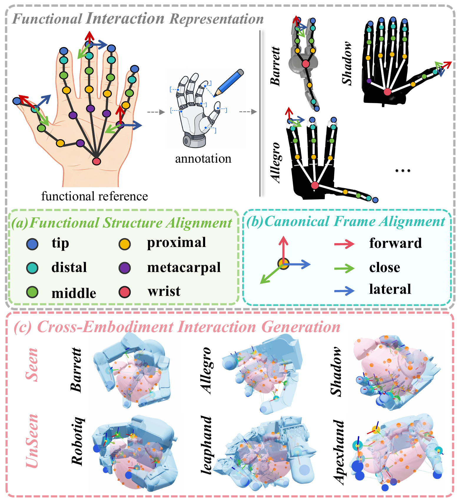
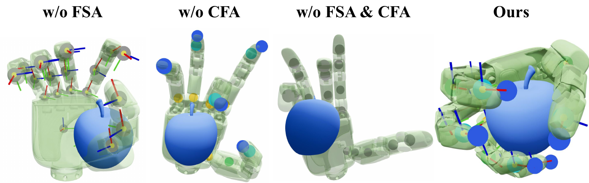
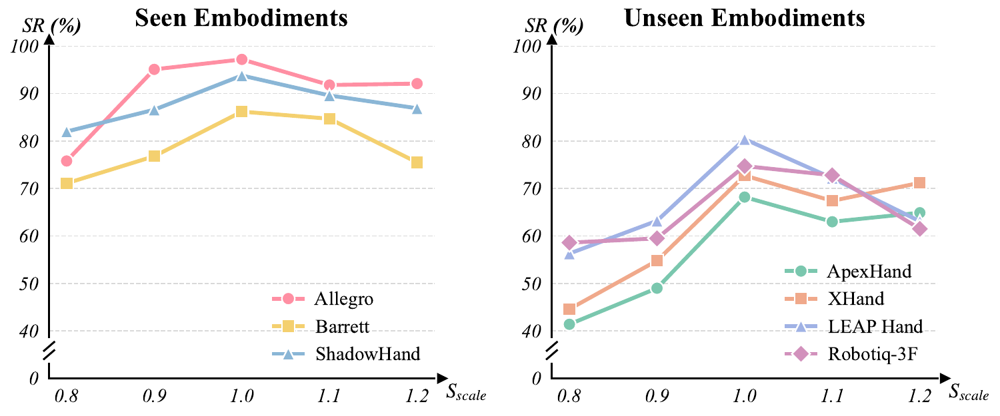
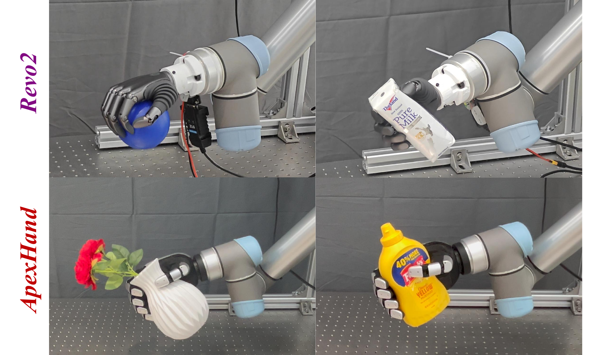

FIRA-Grasp: Functional Interaction Representation Alignment for Cross-Embodiment Dexterous Grasp Generation
Learning grasp interactions
that transfer across hands.
Functional Interaction Representation Alignment for Cross-Embodiment Dexterous Grasp Generation
Align functional hand regions and their local frames, generate a shared grasp layout, and realize it on a new robotic hand.
Explore the method
- Seen embodiments
- 92.40%
- Mean simulation success
- Unseen embodiments
- 74.02%
- Zero-shot simulation success
- Generation time
- 0.16s
- Batch 1, including realization
- Real-world evaluation
- 76.00%
- 152 successes in 200 trials
01 / Method
Align the interaction,
then generate the grasp.
A fingertip has a similar role across hands. Its geometry, joints, and local coordinate axes may not.
FIRA establishes corresponding functional regions and canonical interaction frames before learning grasp relations. This gives hand–object and intra-hand relations consistent meanings across embodiments.
A node–edge diffusion model predicts Functional Node Poses. Fixed inverse kinematics then converts those poses into an executable configuration for the target hand.
- 01
Functional alignment
Functional Structure Alignment (FSA) matches hand regions. Canonical Frame Alignment (CFA) standardizes their local interaction axes.
- 02
Shared generation
Object–node and node–node relations guide a diffusion model to generate the spatial layout of the functional regions.
- 03
Specific realization
Functional Node Pyroki fits the generated targets to the target hand’s kinematics, without a learned retargeting model.

What does a new hand need?
Its geometry, URDF, and a one-time lightweight manual functional annotation. No target-hand grasp demonstrations, fine-tuning, or learned retargeting.
Functional correspondence and canonical frames

02 / Simulation
Transfer to unseen embodiments.
Trained on Allegro, Barrett, and ShadowHand. Evaluated on the same 10 held-out objects with four additional embodiments, without target-hand training.
+15.02 ppUnseen-embodiment mean over CEDex
| Method | Seen (%) ↑ | Unseen (%) ↑ | Time (s) ↓ |
|---|---|---|---|
| GenDexGrasp | 56.77 | 25.22 | 18.77 |
| CEDex | 88.08 | 59.00 | 12.52 |
| D(R,O) Grasp | 85.33 | 38.13 | 0.75 |
| T(R,O) Grasp | 91.07 | 11.95 | 0.21 |
| UniMorphGrasp † | 94.00 | — | — |
| FIRA-Grasp Ours | 92.40 | 74.02 | 0.16 |
† UniMorphGrasp values follow its published protocol; code was unavailable at evaluation. They are not a matched reproduction. — denotes an unavailable result. Time is measured on seen embodiments.
Evaluation protocol and model configuration
Simulation uses 100 grasps per embodiment–object pair and three repeated evaluations. In Isaac Gym, the hand closes for 1 s and the object receives six directional disturbances. Success requires final displacement below 2 cm.
All locally evaluated methods, including CEDex, use batch size 1. Timing includes encoding, generation, and optimization or inverse kinematics after warm-up and synchronization on an RTX 5880 Ada; Functional Node Pyroki runs on the CPU. Loading, one-time compilation, I/O, and simulation are excluded.
The model uses 25 Functional Node slots, six Diffusion Units, and 20-step stochastic DDIM. Its 13.647M parameters comprise 13.041M trainable parameters and a frozen 0.606M VQ-VAE. Training uses 14,011 grasps of 48 objects and 24 grasps per GPU.
Each unseen embodiment
- ApexHand
- 68.20%
- XHand
- 72.73%
- LEAP
- 80.40%
- Robotiq-3F
- 74.73%
03 / Analysis
Both forms of alignment matter.
Removing FSA reduces unseen-embodiment success to 33.90%; removing CFA reduces it to 19.40%. Without either, success is 0.95%.
| Representation | Success ↑ |
|---|---|
| Full FIRA-Grasp | 74.02 |
| w/o FSA | 33.90 |
| w/o CFA | 19.40 |
| w/o FSA & CFA | 0.95 |
The examples show a closing tendency without FSA, but misplaced functional parts. Without CFA, part placement is more recognizable, yet inconsistent local directions disrupt coordinated closure.




Beyond the original geometry
With fingers lengthened by 10%, success stays above 84% on all seen embodiments and at least 63% on all unseen embodiments. Geometry-dependent inputs are updated; functional correspondence and model weights stay fixed.
Grasp diversity
Success does not capture the full range of generated grasps. FIRA-Grasp’s measured diversity is 0.293 rad, below the reported baselines. Concentration of Functional Node Poses before inverse kinematics suggests the learned distribution may also limit diversity.
04 / On the robot
From simulation to physical hands.
The same model.
Two unseen physical embodiments.
ApexHand and Revo2 are mounted on UR5 arms with RealSense D435i observations. The simulation-trained model is deployed without real-world training or fine-tuning.
- ApexHand
- 84/100
- Revo2
- 68/100
10 objects, 10 random placements per object, per embodiment. Success requires lifting the object clear of the table and maintaining a stable grasp.


Review materials
This anonymous page accompanies the manuscript. The submitted PDF and accompanying video, if supplied, remain the review materials; this page provides a visual overview.
Author information and identifying repository links are omitted for double-anonymous review.